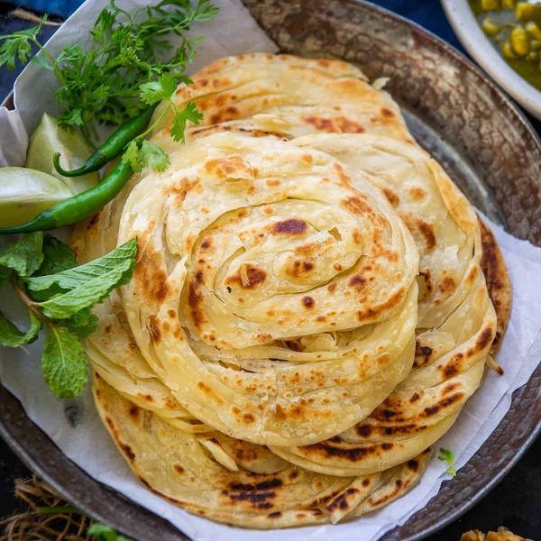

Malabar Paratha/Kerala Parotta

Kerala Parotta is one of the popular south indian layered paratha recipe made with maida or plain flour.
It's known for its crisp and flaky taste with multiple layers of folded and twisted parotta layers in it.
Porotta is generally served with a spicy coconut-based vegetable kurma recipe, but can also be served with choice of north indian curries.
Ingredients
- 3 cup maida / plain flour
- 2 tbsp rava / semolina / suji, fine
- 1 tbsp sugar
- 1 tsp salt
- 2 tbsp ghee / clarified butter
- Water for kneading>
- oil, for soaking & roasting
INSTRUCTIONS
- firstly, in a large mixing bowl take 3 cup maida, 2 tbsp rava, 1 tbsp sugar, 1 tsp salt and 2 tbsp ghee.
- rumble and mix well until the flour turns moist.
- now add water and start to knead the dough.
- add water slowly and knead to a smooth and soft dough.
- further add 2 tbsp oil, cover and rest for 1 hour.
- after 1 hour, punch and knead the dough again.
- knead until the dough absorbs all the oil.
- now pinch a ball sized dough and place in a bowl,add ¼ cup oil, cover and soak for 1 hour.
- now take the ball and roll gently, cut into thin strips using a sharp knife and bring together the stips and pull slightly now roll spiral, making sure all the strips are intact.
- with greased hand, pat and spread the dough, roll slightly thick, making sure the layers are intact, now place the rolled parotta onto hot tawa. make sure to grease the tawa well.
- cook on medium flame until the base is cooked.
flip over and spread ½ tsp oil.
- cook on medium flame until both sides turn golden brown.
crush the parotta gently, this helps to separate the layers.
finally, enjoy kerala parrota with Kerala Beef Fry